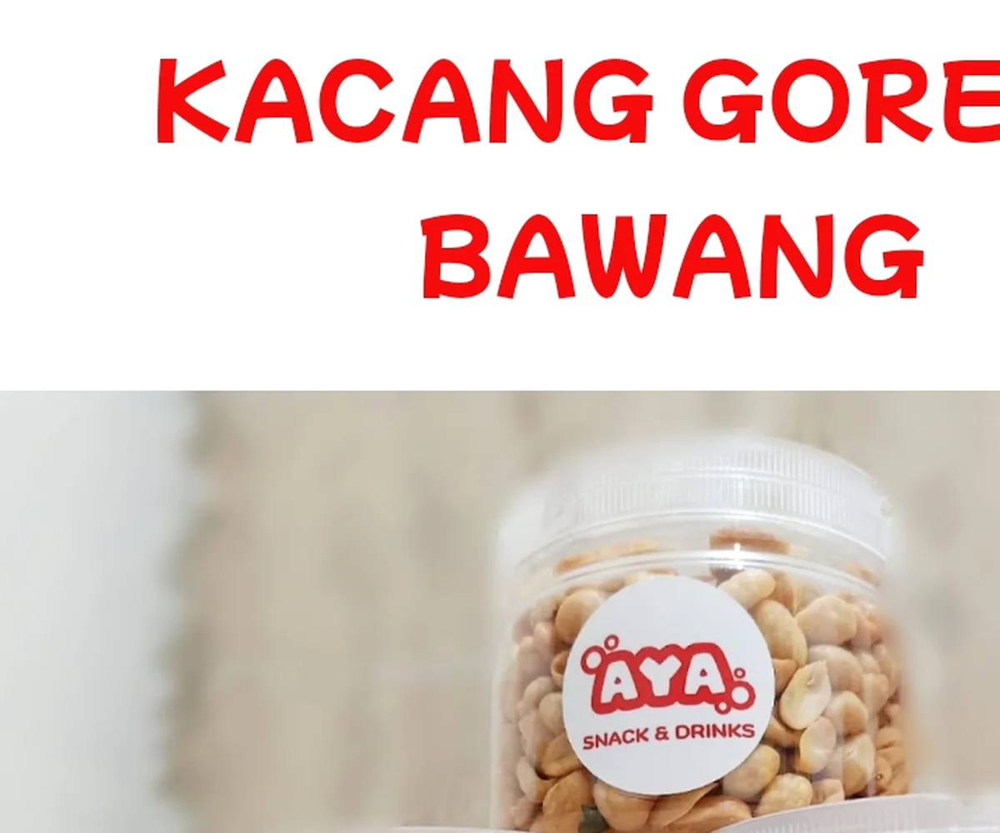
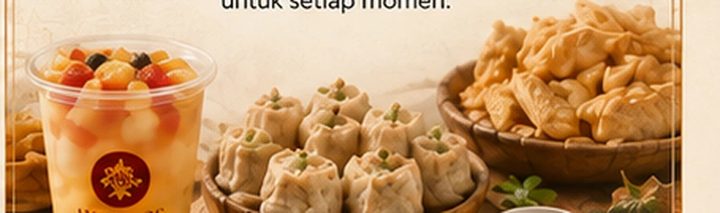
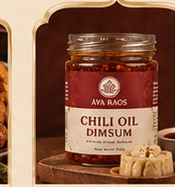

Camilan
Pilihan camilan sesuai produk yang aktif di katalog.
Lini untuk camilan, frozen snack, makanan siap dinikmati, dan minuman.

AYA Snacks & Drinks menaungi camilan, frozen snack, makanan siap dinikmati, dan minuman. Lini ini hadir untuk momen santai, berbagi, atau kebutuhan praktis sehari-hari.

Pilihan camilan sesuai produk yang aktif di katalog.

Produk beku yang disiapkan sesuai informasi produk.

Sajian praktis untuk momen sehari-hari.

Pilihan minuman AYA sesuai ketersediaan produk.
Dimsum + Chili Oil menjadi featured product lini ini karena mewakili pengalaman yang praktis untuk dinikmati, sekaligus tetap membawa karakter rasa AYA.